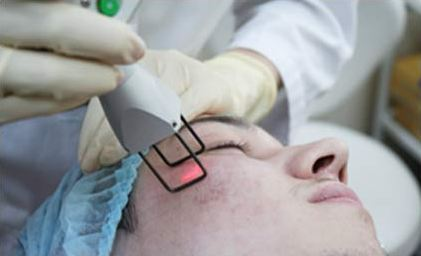
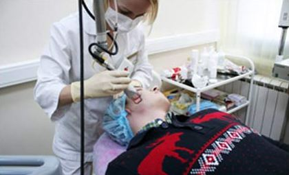
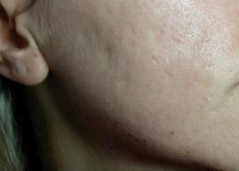
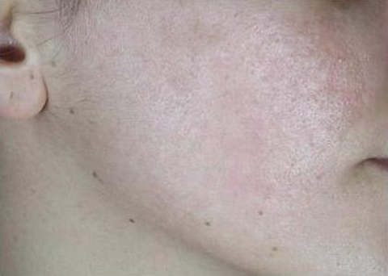
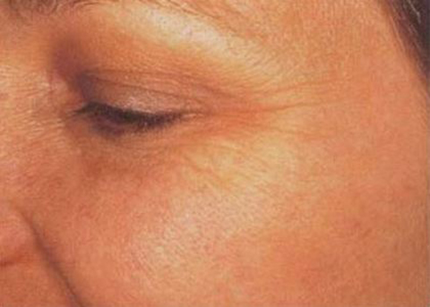
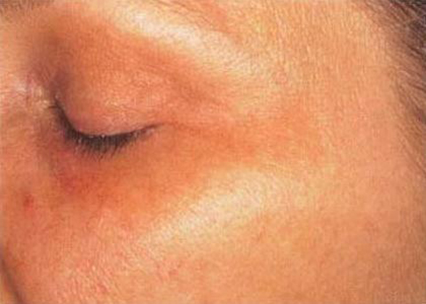
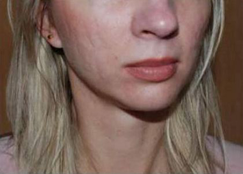
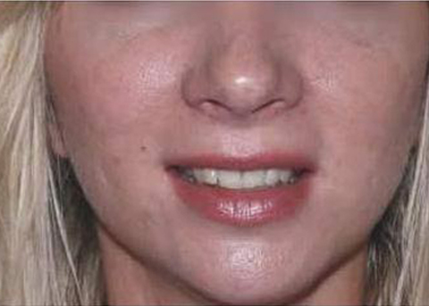
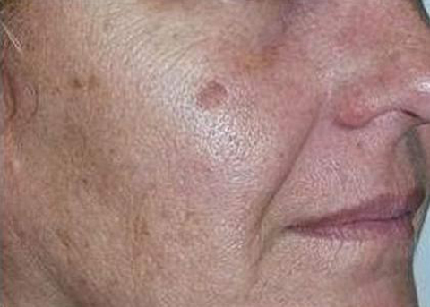
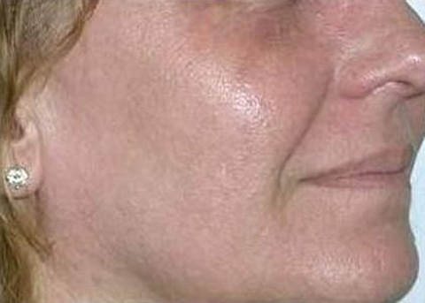

Лазерная шлифовка кожи лица
Лазерная шлифовка лица – отличная возможность для лёгкого избавления от морщин, пигментации, рубцов и следов акне. Наш медицинский центр «ДельтаКлиник» поможет каждому желающему добиться идеальной кожи и надолго сохранить свою молодость.
Многие люди задают вопрос: «Лазерная шлифовка лица — что это такое?». Суть процедуры следующая: инновационное оборудование SmartXide DOT CO2 нашего центра оказывает мощное, но при этом не травматичное для окружающих тканей воздействие. Лазерный луч выжигает верхний слой омертвевшего эпидермиса и стимулирует выработку коллагена, что весьма положительно сказывается на состоянии кожи пациентов.
- 
- 
На фото: лазерная шлифовка кожи лица
Лазерная шлифовка кожи лица в Москве
Перед выполнением процедуры важно записаться на консультацию к врачу-дерматологу нашего центра. Первая консультация для всех новых клиентов порадует 10% скидкой.
Удаление шрамов лазером требует проведения большого количества сеансов, так как невозможно добиться исчезновения подобных недостатков за одну процедуру.
Лазерное оборудование поможет постепенно выжечь плотную фиброзную ткань, образовавшуюся вследствие приобретения травмы. Получить ровный рельеф кожи и добиться практически неотличимых тканей рубца от окружающих удастся спустя небольшой промежуток времени. С помощью лазера выпаривается кожа вокруг глаз, вырабатываемый коллаген постепенно наполняет морщинистые полости, благодаря чему, лицо становится ровным.
Количество необходимых сеансов будет назначено врачом, исходя из имеющейся степени сложности выведения рубцовой ткани. Достаточно уделить некоторое время удалению шрамов на лице, и больше такой видимый дефект не будет приносить неудобств и стеснения человеку.
Выполнение шлифовки лица в Москве при помощи нашего центра «ДельтаКлиник» имеет множество плюсов:
- Проведение процедуры исключительно при помощи современного оборудования;
- предоставление инновационных методик оздоровления и улучшения состояния кожи лица;
- правильный подбор мощности лазерного луча и количества процедур;
- доступные цены;
- видимый эффект уже спустя несколько дней.
- Достаточно продолжительный период реабилитации — 2–4 недели). В такой период требуется выполнять ряд ухаживающих процедур за кожной поверхностью: использование назначенных мазей, кремов, иногда анестетиков. После завершения манипуляций возможно появление зуда лицевого кожного покрова, иногда повышается температура тела;
- болезненные ощущения во время процедуры, которые не убираются полностью местной анестезиологией, а общий наркоз в таких случаях, используется достаточно редко.
Подготовка к процедуре:
Перед осуществлением шлифовки понадобится сдать анализ крови и принять противовирусные препараты.
Как происходит процедура?
Наш центр гарантирует каждому клиенту комфортабельное проведение процедуры. Правильная подготовка кожи, нанесение обезболивающей мази и подача прохладного воздуха позволят снизить до минимума болевые ощущения при воздействии лазерного луча.
После медицинской манипуляции появится покраснение и, возможно, отек. В течение 2-3 недель пациент сможет заметить образование корочек, шелушение кожи, которое пройдёт самостоятельно. Важно не мочить обработанную зону на протяжении 3 дней и не наносить косметические средства.
Противопоказания
- Кормление грудью
- Беременность
- Иммунодефицит
- Псориаз
- Обострение хронических заболеваний
- Эпилепсия
- Рецидивирующая угревая болезнь
- Онкологические заболевания
Цена на шлифовку кожи лица лазером
Стоимость процедуры напрямую зависит от объёмов будущей работы. Цена варьируется от 1 до 35 тыс. рублей. Врач-дерматолог огласит стоимость сеансов уже на первой консультации.
Записаться на приём поможет онлайн-форма нашего сайта либо указанные номера телефонов. Звоните, мы с радостью позаботимся о вашем здоровье!
Лазерная шлифовка: «до» и «после»
-
 
-
 
-
 
-
 
Отзывы наших пациентов
-
«Огромное спасибо за профессионализм и душевное отношение со стороны персонала. Особенно хотелось бы отметить Алексееву Светлану Михайловну, за ее жизнерадостный, доброжелательный подход к каждому пациенту! Всегда приятно приходить на приём, зная, что в любой ситуации будет оказана высококвалифицированная помощь».
Анджела, Москва
-
«У меня на лице остались шрамы после прыщей, которые еще в юности были. Замазывание тоналкой не помагало, а только усиливало выраженность недостатков. Лазерная шлифовка вернула лицу привлекательный эстетичный облик. Кожа стала свежая и ровная».
Елена, 44 года, Одинцово